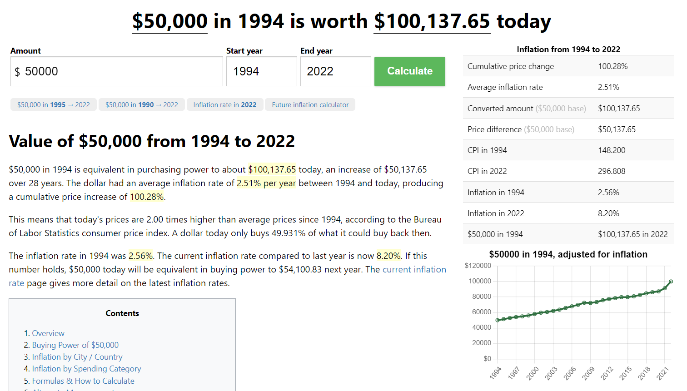

Welcome to the Census 1994 Adult Dataset!
Here, you can see the overview trends of our 1994 data in Tableau.
Age has the highest correlation to high/low 1994 income at 0.32. This visualization shows that the average age of respondents in the high income group was 44, while it was 34 in the low income group.
The next highest correlation is relationship at 0.16. Marital Status, a similar variable, was 0.14. The underlying variable, sex, which only had a correlation of 0.02 may have accounted for this slight difference.
Educational Attainment had a correlation of 0.14. Education levels vary across country of origin; however, higher earners in our U.S. dataset tended to have college degrees, whereas lower income earners tended to not have college degrees.
Although race is not well correlated to income, our dataset had a preponderance of white people.
Higher income earners tended to have more capital gains, which stands to reason.
Low income earners worked 39 hours per week on average, while higher income earners worked 45.5 hours per week on average.


... View the Top 100 Highest "Fnlwgt" Records Below!
... View the ERD Diagram of the Database!

Welcome to the Modern- Day Income!
CPI WidgetOccupation Comparison Widget


... A Few Key Take-aways about the 1994 Dataset!


... In the past 28 years, wages have very much inflated!
 See what the wage is worth today!See how age and marital status continue to be important today!
... Select Countries in Average U.S. Dollars Today!